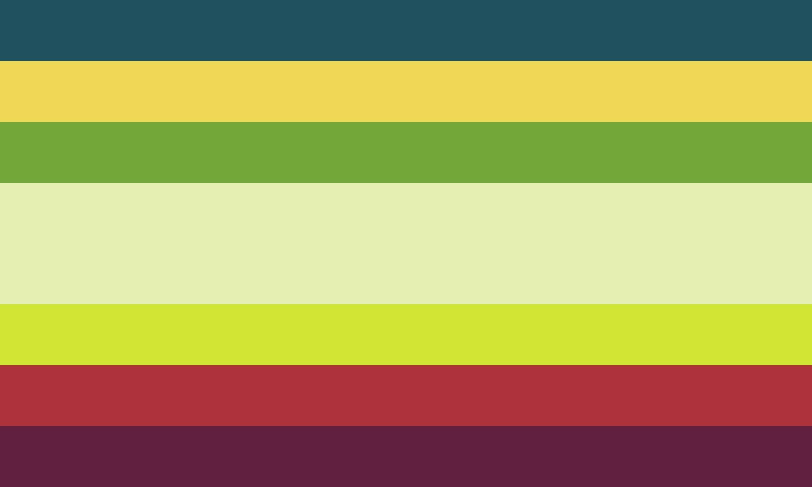

Genderentity !! :: Genders in a Gendercontinuum / Neogender Complex that are self-contained and autonomous (not AUIN). Genders that are close to a median system facet because they feel alive/partially almost another person.